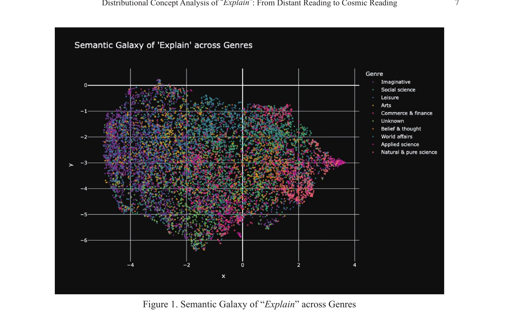
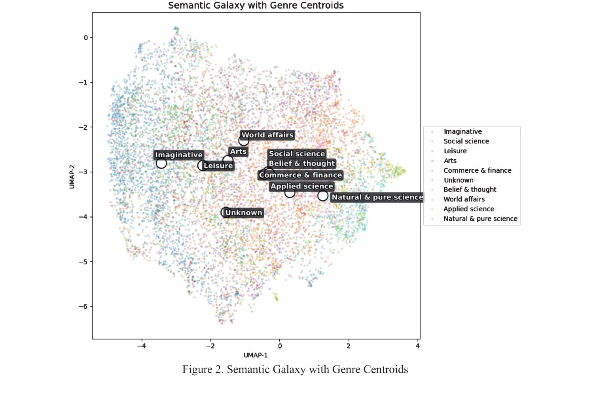
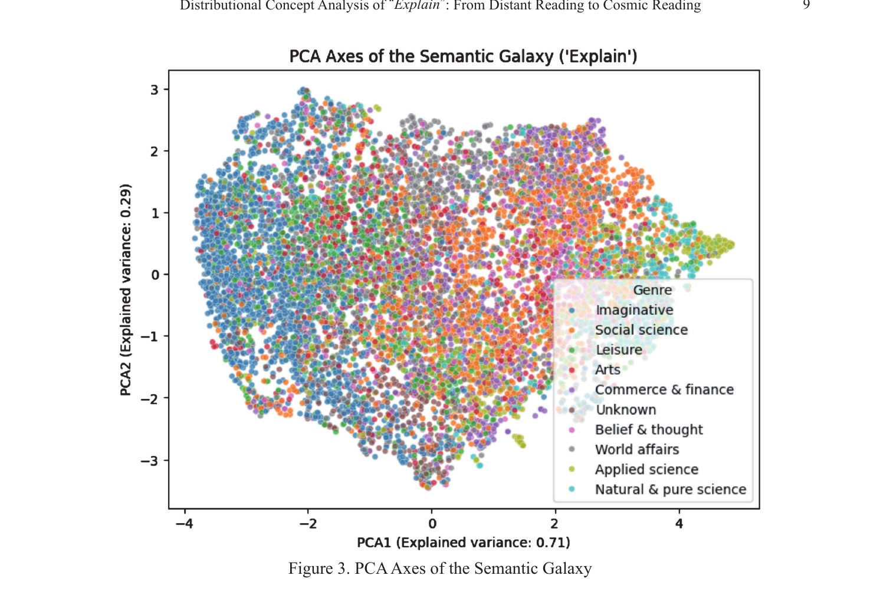
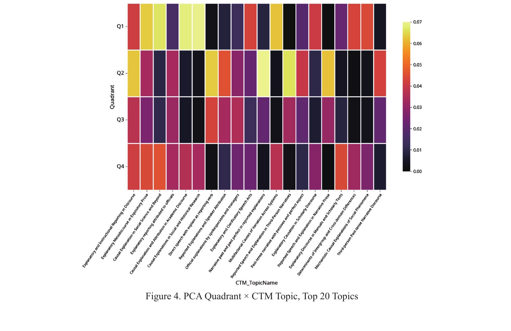
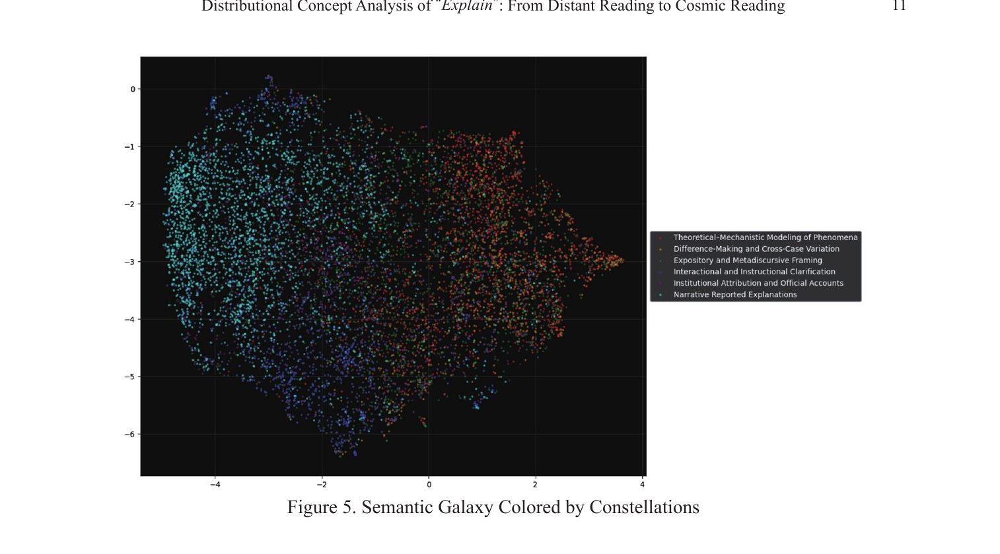
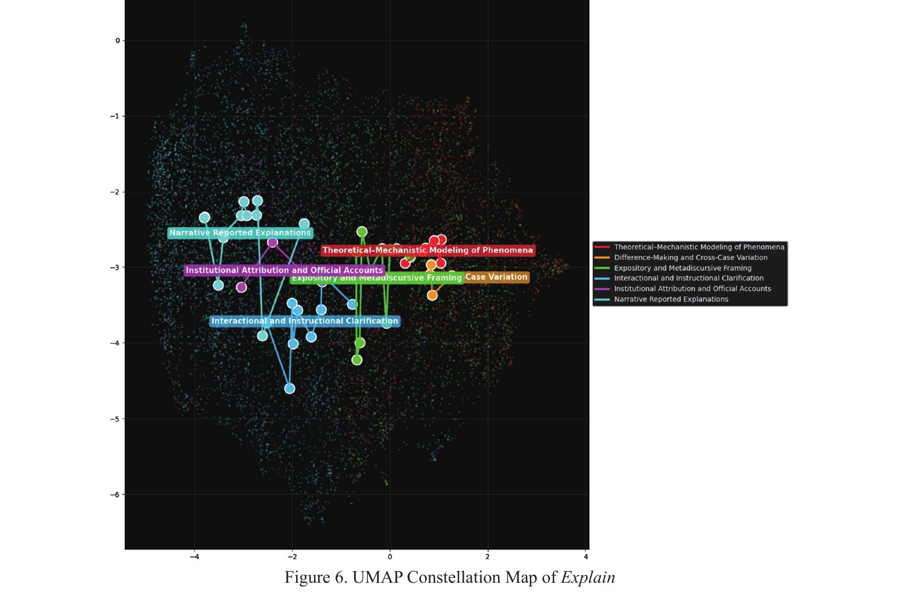

コーパス研究の基礎と検索
第6回 人文学とデジタル技術（2026）
コーパス（大規模言語データベース）を人文学研究に活用することには、いくつか重要な意義があります。
再現性の向上
従来の人文学では、研究者ごとの解釈や直感に頼る部分が大きく、同じ資料から異なる解釈が生まれることもしばしばでした。コーパスを用いることで、誰もが同じデータにアクセスし、同じ検索手順を踏めば同様の結果を得られるため、研究結果の検証や追試が容易になります。
確証バイアスの回避
確証バイアスとは、自分の仮説に都合の良い事例ばかりを集めてしまう傾向のことです。コーパス上で網羅的にデータを観察すれば、恣意的に例を選ぶ余地が減り、仮説に合致する例だけでなく反証例も含めて客観的に検討できます。
解釈の根拠の可視化
コーパスから得られた結果（例えばある語の使用頻度や用例の一覧）は、解釈を裏付ける明確なエビデンスとなります。具体的なデータを示せるため、従来の曖昧な主観的判断に比べて説得力が増します。
このようにコーパスは、人文学を単に「データ化」する以上の意味を持っています。それは人文学を「解釈の学」から「実証の学」へと開き、データによる客観的観察と人間的な解釈とを統合する試みでもあります。
コーパス（Corpus）とは、現実に使用された大量の言語データを電子的に集積・構造化したデータベースのことです。テキストデータ（文章や会話の書き起こし）がコンピュータで検索・分析できる形で蓄えられており、日本語では「言語コーパス」などと呼ぶこともあります。典型的には数百万語から数億語規模にも及ぶ自然言語の用例を含み、言語学の研究、辞書や文法書の編纂、言語教育などで重要なリソースとして活用されています。
コーパスには様々な種類があり、構築方法や用途によって分類できます。
均衡コーパス（Balanced Corpus）
あらかじめコーパスの規模や収集範囲を定め、言語全体を代表するように多様なジャンルからバランスよくデータを集めて構築されたコーパス。言語のスナップショットであり、特定の時期・領域の言語使用を偏りなく反映することを目指します。典型例として英国英語の BNC（約1億語）や、日本語の BCCWJ（約1億語）があります。
モニターコーパス（Monitor Corpus）
継続的にデータが追加・更新されていく動的なコーパス。言語の変化を逐次「監視（モニター）」する目的で設計されており、新語の出現状況や語の使用頻度の変遷を追跡するのに向いています。例えばアメリカ英語の大型コーパスである COCA などがモニターコーパスに該当します。
アノテーション付きコーパス
原文テキストに品詞や構文構造、意味情報などの注釈（アノテーション）が付与されたコーパス。「名詞句に限定して検索する」「主語と目的語の関係を持つ文を抽出する」など高度な分析が可能です。代表例として英語の Penn Treebank や、日本語では BCCWJ（形態素・品詞情報付きで提供）などが挙げられます。
パラレルコーパス（Parallel Corpus）
二つ以上の言語で内容が対応しているテキストを対にして収録したコーパス。翻訳テキストの原文と訳文を揃えたもので、多言語の翻訳研究や機械翻訳の開発にしばしば用いられます。例えば Europarl コーパスは典型的なパラレルコーパスです。
専門分野コーパス（ドメインコーパス）
特定の専門領域・ジャンルに特化してテキストを集めたコーパス。例えば医学論文だけを集めた医学英語コーパス、法律文書のコーパス、ある作家の全作品コーパスなど。人文学の研究者が自前でコーパスを構築する場合も、自分の研究対象に合わせたドメインコーパスを作るケースが多いでしょう。
学習者コーパス（Learner Corpus）
第二言語・外国語としてその言語を学ぶ学習者が実際に書いた作文や発話を収集したコーパス。非母語話者特有の誤用や中間言語の特徴をデータとして記録している点に特徴があり、応用言語学や言語教育の研究で重宝されます。
ウェブコーパス
インターネット上の大量のウェブページからテキストを収集して構築されたコーパス。圧倒的なデータ量と多様性を確保できるのが利点で、珍しい表現例や最新の流行語・専門語も見つけやすい魅力があります。一方で代表性の担保が難しい、品質管理の問題、著作権やプライバシーへの配慮も必要です。
大切なのは、自身の研究目的に合ったコーパスを選ぶことです。言語の現在の全体像を知りたいなら均衡コーパス、新語の出現を追跡したいならモニターコーパス、特定分野の表現を調べたいなら専門分野コーパス、といった具合に使い分けると良いでしょう。
実際にコーパスを選んだり自作したりする際には、いくつか考慮すべきポイントがあります。
コーパスを用いた研究スタイルには、大きく分けて二つのアプローチが存在します。
コーパス検証型（Corpus-based）
あらかじめ設定した理論や仮説をコーパスデータによって検証する手法です。研究者は分析前に「○○という表現は話し言葉で多用されるはずだ」「英語の受動態は書き言葉で頻出するだろう」といった仮説や問いを立て、それに基づきコーパス検索と結果分析を行います。
メリット：明確な問いに答える形で分析を進めるため結果の解釈がしやすく、エビデンスが直接仮説の支持・反証に結びつく。
デメリット：仮説にない現象は見落としがちになる。
コーパス駆動型（Corpus-driven）
明確な仮説を最初から持たず、コーパスデータそのものの中からパターンや法則を見出そうとする手法です。既存の理論にとらわれず大量のデータを観察し、そこから知見を導く「データ主導（ボトムアップ）」のアプローチになります。
メリット：予期しないパターンの発見につながりやすく、新しい言語事実や規則性を発掘できる。
デメリット：分析範囲が広大になり焦点が絞りにくい。膨大なパターンの中から意味のあるものを取捨選択して理論化するには熟練を要する。
アプローチの比較と統合
以上の二つのアプローチにはそれぞれ利点と欠点があり、相補的な関係にあります。コーパス検証型は演繹的（トップダウン）であり理論の検証に向いている一方、コーパス駆動型は帰納的（ボトムアップ）で新知見の発見に優れています。実際の研究では、両者を組み合わせることで互いの欠点を補うことが多いです。例えば、初めにコーパス駆動的にデータを探索して興味深いパターンを発見し、その後コーパス検証型の手法で追加データを用いて仮説を検証する、といった手順です。初心者のうちは、まずは検証型のように明確な問いを立ててコーパス分析を始めてみるのが取り組みやすいでしょう。
以上でコーパスの基礎知識と理論的背景を概観しました。ここからは実際にコーパスを検索・分析する手順を学びましょう。実習には、世界的に広く使われているコーパス検索ツールである Sketch Engine を中心に扱います。日本語コーパス向けのツールである国立国語研究所の「中納言」にも触れます。
Sketch Engine とは何か
Sketch Engine（スケッチエンジン）は、チェコの Lexical Computing 社が開発した強力なオンラインコーパス検索・分析ツールです。世界各国の言語コーパス（100以上の言語、500以上のコーパス）を収録しており、研究用途から商用まで幅広く利用されています。例えば英語の BNC や米語の COCA、日本語のコーパスとしてはウェブから収集した日本語ウェブコーパスなども含まれています。特徴的な機能として、Word Sketch と呼ばれるコロケーションの自動要約機能があり、ある単語の用法を「主語になる名詞一覧」「目的語になる名詞一覧」「修飾する形容詞一覧」など文法関係ごとにまとめて表示できます。
中納言（NINJAL 中納言）の紹介
日本語のコーパスを使いたい場合には、国立国語研究所が提供する「中納言」というウェブアプリケーションも有力な選択肢です。中納言は主に同研究所が構築した日本語コーパス（現代日本語書き言葉均衡コーパス＝BCCWJ や日本語話し言葉コーパス＝CSJ、日本語歴史コーパス＝CHJ など）を検索するためのツールです。形態素解析済みのデータに対して、高度な検索（品詞や活用形を指定した検索など）が可能で、日本語研究者にとって貴重な環境です。
基本的な検索方法（フリーワード検索と CQL）
Sketch Engine では、大きく分けて二通りの検索方法があります。一つはキーワードをそのまま入力して検索する簡易な方法（フリーワード検索）、もう一つは CQL（Corpus Query Language）と呼ばれるクエリ言語を用いて高度な条件を指定する方法です。
フリーワード検索では、調べたい単語やフレーズを入力し Enter キーを押すだけで検索が実行されます。基本的には部分一致検索（understood なども含む）になります。
CQL では検索したい語や品詞を [ ] で囲んで指定します。例えば [lemma="understand"] と入力すると、見出し語が understand である単語、すなわち understand の任意の活用形（understands, understood, understanding など）をまとめて検索できます。また [word="understand"] [tag="NN.*"] のようにスペースで区切って連続した条件を書くと、「understand という単語に続いて名詞（NN）が現れるパターン」を検索します。CQL では正規表現や論理演算子も使えるため、「5文字以上の名詞」や「同一文中で近距離に出現する2語」なども複雑な検索も表現できます。
基本機能：KWIC 表示・頻度分析・共起分析
KWIC 表示（コンコーダンス）
検索を実行すると、デフォルトでは結果は KWIC 形式で表示されます。KWIC とは "Key Word in Context" の略で、検索語を中心に前後の文脈（コンテクスト）を数語ずつ表示したものです。これによって、検索語がどのような文脈で使われているかを直感的に把握できます。KWIC 表示をスクロールして眺めるだけでも、その語の典型的な使われ方（例えば頻出するフレーズや文型）を掴むことができます。
頻度分析
検索語の出現頻度は結果画面上部に表示されます。SketchEngine ではヒット件数とともに、コーパス全体における百万語あたり頻度（per million words; pmw）も表示されることがあります。頻度情報は、語がどれほど一般的かを示す指標であり、異なる語を比較したりジャンル間で出現率を比べたりする際に有用です。また Frequency List（頻度表）機能もあり、コーパス中で最も頻出する単語を列挙したり、特定の条件下での頻度順位を調べたりできます。
共起（コロケーション）分析
コーパス研究では、ある語と一緒によく現れる語（共起語, collocate）を調べることも重要です。Sketch Engine で検索した結果画面には「Collocations（コロケーション）」タブや「Word Sketch」タブがあります。Collocations 機能では、検索語の左右一定範囲内に出現する単語で統計的に有意に頻度の高いものがリストアップされます。さらに「Word Sketch」機能を使うと、検索語を中心とした文法関係ごとの共起一覧が得られます。例えば「オブジェクト（目的語）として現れる名詞」として what, it, this, things など、「副詞的に修飾する語」として fully, really, how などが抽出され、それぞれの共起頻度やスコアが表示されます。
検索例：BNC における understand の使用傾向
ここでは実際の研究のミニチュア版として、BNC（英国英語コーパス）における understand の使用傾向を分析してみます。Sketch Engine でコーパスとして BNC を選択し、検索バーに [lemma="understand"] と入力して検索します。結果として、BNC 全体での understand のヒット件数と KWIC 一覧が得られ、BNC 約1億語中のヒット件数はおよそ数千件程度になります。
KWIC 一覧をざっと眺めると、understand が使われる文脈にはいくつかパターンがあることが分かります。まず目立つのは、一人称主語との組み合わせです。「I understand」で始まる文が頻出しており、「I understand your point」のように相手の発言や事情を受けて理解を示す用法が多く見られます。さらに共起分析からは、understand と頻繁に共起する副詞に fully があります。「fully understand」は「完全に理解する」という意味で用いられ、「I don't fully understand」や「You must fully understand」のように深い理解の有無を強調しています。
このように、コーパスを使えばある語の使われ方や意味の広がりをデータに基づいて明らかにすることができます。頻度情報はその語の一般性や重要度を示し、共起は語のネットワークや特徴的なフレーズを教えてくれます。KWIC による文脈の観察からは、語の持つニュアンスの違いや使用場面の典型例を掴むことができます。これらはすべて、従来の辞書や直感だけに頼っていたのでは得にくかった知見です。
前節までで、コーパスから単語を検索し、KWIC や頻度・共起を観察する基本的な手順を学びました。ここからは一歩進んで、コーパスから得られた用例を 多次元的に注釈し、語の意味のあり方そのものをデータから抽出する本格的な分析手法を紹介します。それが Behavioral Profile（行動プロファイル、以下 BP）分析です。BP 分析は Stefan Th. Gries（2010）が体系化し、Divjak（2010）、Glynn（2014）らによって発展してきた、認知言語学・コーパス言語学における代表的な定量分析手法のひとつです。
BP 分析の発想：意味は「振る舞いの束」である
伝統的な辞書編集や意味記述では、語義は研究者の内省や少数の例文に基づいて整理されてきました。たとえば understand の語義は辞書ごとに「理解する／察する／聞き知る／同情する」などと分類されますが、その区切り方は研究者・辞書ごとに異なり、語義の数や境界は一意に定まりません。
BP 分析はこの状況に対し、「ある語の意味は、その語が現れる文脈の統語的・意味的・談話的な振る舞い（behavior）の総体として観察可能である」という立場を取ります。すなわち、各用例について「どのような主語と現れるか／どのような目的語を取るか／どの時制で使われるか／どのような副詞と共起するか／どの談話的位置にあるか」といった素性を多次元的に記述し、その素性ベクトルを多変量解析（多重対応分析 MCA や階層クラスター分析 HCA）にかけることで、語義のクラスターをデータからボトムアップに抽出するのです。
この発想は、Wittgenstein 的な「意味は使用にある」という見方をコーパスで定量化するものと言えます。研究者が「この語にはこれだけの語義がある」と先に決めるのではなく、データの中で似た振る舞いをする用例同士が自然にクラスターを形成し、それが「語義」として浮かび上がってくる──これが BP 分析の核となるアイデアです。
分析パイプライン（understand の場合）
具体的に understand を題材にした BP 分析の流れを示します。これは現在進行中の研究プロジェクト understand/analysis での実際の手順です。
[lemma="understand"] と指定するだけで、understand / understands / understood / understanding といったすべての活用形が一括で抽出できる。BNC では数万件規模になる。このパイプラインの要点は、「研究者の直感で語義を切り分ける」のではなく「データの中で似た振る舞いをする用例を統計的に束ね、結果として現れたクラスターを解釈する」という方向性にあります。これは前節（6.5）で扱った Corpus-driven アプローチを多変量解析と結びつけた、もっとも徹底したボトムアップ型コーパス研究の一例だと言えます。
BP 分析の心臓部は、用例を記述する素性スキーマ（feature schema）の設計です。understand プロジェクトでは、各用例に 27 個の素性を付与します。すべての素性は閉じた選択肢を持つカテゴリ変数で、自由記述は許されません（後続の MCA / HCA に直接投入できるようにするため）。また、素性が当てはまらない場合は一律に NA（適用不能）が割り当てられます。
27 個の素性は、判定の難易度と理論的位置づけによって 5 つのレイヤーに整理されています。レイヤー 1 から 5 へと進むにつれて、判定が形式的（統語的）なものから解釈的（語用論的）なものへと移っていきます。なお、これらの 27 項目とは別に、BNC の文書メタデータから取得するモード／ジャンル／サブジャンルの 3 項目（F28–F30）が分析に加わりますが、これらは LLM の判定対象ではなくコーパス側から直接読み込まれます。
Layer 1：形態統語的形式（12 項目、F01–F12）
統語構造から機械的に決まる項目群。LLM でも安定して付与可能で、いわば「土台」となる素性。
VVB 原形 / VV0 一般現在 / VVD 過去 / VVN 過去分詞 / VVG 現在分詞 / VVZ 三単現）1sg / 1pl / 2 / 3sg / 3pl / generic_one / generic_you / impersonal_it / no_overt_subj）human_individual / human_collective / institution / abstract / inanimate / NA）definite / indefinite / generic / NA）yes / no）NP / that_clause / wh_clause / embedded_Q / PP / so_anaph / it_anaph / nominal_clause / to_inf / other / none）present / past / future / present_perfect / past_perfect / NA）simple / progressive / perfect / perfect_progressive）declarative 平叙 / interrogative 疑問 / imperative 命令）positive / negative）active / passive）matrix / complement / relative / adverbial / coordinated / parenthetical）Layer 2：モダリティと副詞修飾（4 項目、F13–F16）
understand を修飾する助動詞と副詞の情報。"fully understand"、"can't quite understand" などの違いを捉える。
epistemic 認識的 / deontic 義務的 / ability_can 能力 / volitional 意志 / none）degree 程度 / negation_partial 部分否定 / manner 様態 / focus 焦点 / none）completely / fully / really / well / hardly / barely / quite / sort_of / kind_of / other / NA）full 全否定 / partial 部分否定 / NA）Layer 3：目的語の意味類型（4 項目、F17–F20、F05=yes のときのみ）
何を understand するのかという「対象」の意味分類。"understand the equation"（メカニズム）と "understand your feelings"（人物の感情）は異なる意味次元に属する。
proposition 命題 / instructional 指示 / language_code 言語コード / abstract_concept 抽象概念 / mechanism メカニズム / person_feeling 人の感情 / person_situation 人の状況 / event_situation 出来事・状況 / metalinguistic メタ言語 / NA）addressee 聞き手 / self 自己 / third_party 第三者 / generic 総称 / non_human 非人間 / NA）simple / complex / NA）specific 特定 / generic 総称 / hypothetical 仮想 / NA）Layer 4：共起語彙（3 項目、F21–F23）
対象文中で understand の前後 10 語以内に現れる語彙的手がかり。ヘッジ・情意語・証拠性表示がどれくらい一緒に現れるかを観察する。
yes：I think, I suppose, you know, sort of 等 / no）yes：feel, feeling, hurt, pain, frustration, concern, situation 等 / no）yes：apparently, it seems, as far as I know, I gather 等 / no）Layer 5：談話・語用論（4 項目、F24–F27、最も判定が難しい層）
"I understand." が独立した応答トークン（response token）として使われる用法と、"Do you understand?" が理解確認（comprehension check）として使われる用法を区別する、もっとも解釈的なレイヤー。前後文脈と組み合わせて判定する。
1st_person / 2nd_to_addressee / 3rd_person_report / impersonal）information_report 情報報告 / claim_of_knowledge 知識主張 / alignment 同調 / comprehension_check 理解確認 / response_token 応答トークン / hedge ヘッジ / mitigation 緩和 / NA）assertive 断定的 / hedged ヘッジあり / evidential 証拠性ベース / NA）response_to_prior 直前への応答 / initiation 開始 / continuation 継続 / monologic 独話的 / NA）判定例（実際のアノテーション・ガイドラインより）
27 項目の素性スキーマを設計したあと、実際に各用例にラベルを付けていく作業をアノテーション（注釈付け）と呼びます。BP 分析の妥当性は、このアノテーションの精度に大きく依存します。アノテーションには大きく二つのやり方があります。
伝統的な手法：人手アノテーション
BP 分析が方法論として確立された当初から行われてきた、もっとも標準的なやり方は、訓練を受けた複数のアノテーターによる人手注釈です。手順は次のようになります：
この方法は妥当性が高い一方、時間とコストが膨大です。一件あたり 5〜10 分かかるとすれば、1,000 件を 27 項目で二人が独立に注釈するだけで延べ 300 時間以上を要します。BP 研究が長らく数百件規模のサンプルに留まり、コーパス全件規模の分析になかなか踏み出せなかったのはこの制約のためです。
現代的な手法：LLM（大規模言語モデル）によるアノテーション
2023 年以降、Claude / GPT / Gemini といった大規模言語モデル（LLM）が言語学的注釈の作業を高い精度でこなせることが分かってきました。これによって BP 分析のスケールが劇的に変わりつつあります。
understand プロジェクトでは、次のような multi-model + human validation 方式を採用しています：
経験的には、Layer 1–2（形態統語・モダリティ）は LLM の判定精度がほぼ人間並み（κ > 0.8）、Layer 3–4（意味・共起）は中程度（κ ≈ 0.6–0.8）、Layer 5（談話・語用）はもっとも難しく、項目によっては LLM 単独では不十分で人手検証を厚くする必要があります。
重要なのは、AI アノテーションは人手アノテーションを完全に置き換えるものではないという点です。むしろ、人手アノテーションを「検証用ゴールドスタンダード」として残しつつ、LLM で規模を BNC 全件レベルにまで拡大する──この補完的な役割分担が、現代のコーパス言語学における BP 分析の主流になりつつあります。人文学研究者にとっての含意は明確です。これまでは「興味深いが現実的に手が出ない」と諦めていた規模の言語データに対して、研究者が定義した理論的素性スキーマを忠実に適用しながら定量的に分析することが、はじめて可能になりつつあるのです。
コーパスを用いた語の意味分析には、BP 分析以外にも様々な手法があります。ここでは関連研究として、英語動詞 explain を対象とした筆者の研究 Sugawara (2026) "Distributional Concept Analysis of Explain: From Distant Reading to Cosmic Reading"（『英語コーパス研究』第33号）を、論文中の図 1〜6 を実際に見ながら紹介します。BP 分析と対比することで、現代コーパス研究の方法論的な広がりがよく見えるはずです。
研究の問い
「説明する（explain）」とは、自然言語のなかで実際にどのような行為として現れているのか？ 科学哲学では Hempel & Oppenheim の演繹的法則的モデル、Salmon の因果機構説、van Fraassen の語用論的説明論、Machamer–Darden–Craver のメカニズム説など多くの理論があるが、それらは現実の言語使用のどの部分を捉えているのか？──この問いに、コーパスデータから定量的に答えようとした研究です。
データと方法
BNC から Sketch Engine を使って explain の KWIC 用例を 18,664 件抽出し、ランダムサンプリングで 10,000 件を分析対象としました。そこに Distributional Concept Analysis（DCA）と呼ばれる 5 層パイプラインを適用します：

explain の用例 10,000 件を文埋め込み + UMAP で 2 次元に投影し、点の色を BNC のジャンル（Imaginative、Social science、Leisure、Arts、Commerce & finance、Belief & thought、World affairs、Applied science、Natural & pure science 等）で塗り分けたものが Figure 1 です。一見ひとつの「雲」のように見えますが、よく観察すると均質な分布ではなく、複数の意味的に整合的な「星雲（nebulae）」からなる銀河構造が浮かび上がります。左側（x が小さい領域）には Imaginative や Arts といった物語的ジャンルが広く分布し、報告話法・人物描写・視点描写など物語的説明に典型的な特徴が現れます。一方、右側（x が大きい領域）には Natural & pure science や Applied science といった科学的ジャンルが密なクラスターを形成し、因果関係・メカニズム記述・モデルベース推論が集中します。中央付近に広く散らばる World affairs / Commerce & finance / Social science は、その両極を橋渡しする「semantic bridge」として機能していると論文は論じます。

Figure 2 は、各ジャンルの重心（centroid）を UMAP 平面上に重ねた図です。ジャンルごとに「平均的な意味位置」が異なる──Imaginative は左、Natural & pure science は右下、World affairs は中央上、Social science / Belief & thought / Commerce & finance / Applied science は中央に密集──ことが明示されます。重心同士の重なり具合は、ジャンル間で共有される言語資源の量を反映しています。たとえば Social science と World affairs の重心が近接しているのは、両ジャンルとも「政策が地域に与える影響を explain する」のような因果帰属とメタ言説的フレーミングを共通の手段として用いているためです。Figure 1 と 2 が示すのは、「説明」は単一の機能ではなく、複数の言説伝統が共有する意味銀河の中で、それぞれ特徴的な領域を占める多中心的なエコロジーだ、ということです。

UMAP は局所的な近傍関係を保つ非線形射影なので、データ全体を貫く「大域的な軸」を見るには別の手法が要ります。そこで論文では同じ埋め込み空間に PCA（主成分分析）をかけ、最大分散方向を抽出しました。Figure 3 がその第 1・第 2 主成分平面です。PCA1（横軸、説明分散 71%）は「科学的・因果的説明 ↔ 物語的・対人的説明」の連続体を表し、PCA2（縦軸、説明分散 29%）は「制度的・公的説明 ↔ 個人的・対話的説明」の連続体を表します。GPT-5 で各象限の代表文を解釈させた結果、(右上)「科学的かつ制度的」（"changes in pH are caused predominantly by the albumin concentration, which explains the lower slope..."）、(左上)「物語的だが制度的」（"...ambulance service spokesman Brian Chambers explains the situation"）、(左下)「物語的・個人的」（"She had explained to him about her mother..."）、(右下)「科学的だが対人的」（"Explain the advantages and drawbacks of organizing a file..."）が見出されました。意味空間は離散的なカテゴリではなく連続的なグラデーションとして組織されているのです。

次に、Combined Topic Model（CTM）で抽出した 50 トピックのうち上位 20 トピックを、Figure 3 の 4 つの象限（Q1〜Q4）にどう分布するかをヒートマップで示したのが Figure 4 です。各セルの色が明るいほど、そのトピックがその象限に多く現れることを意味します。PCA1 正方向（右側、Q1・Q4）には Mechanistic Causal Explanations of Social Phenomena のような科学的・メカニズム的トピックが集中し、PCA1 負方向（左側、Q2・Q3）には Past-tense Narrative with Passives and Perfect Aspect のような物語的・報告話法的トピックが集まります。一方、PCA2 正方向（上、Q1・Q2）には Official Explanations by Spokespersons and Managers のような制度的・公的トピックが、PCA2 負方向（下、Q3・Q4）には Explanatory and Clarificatory Speech Acts のような対話的・指示的トピックが分布します。「右上＝科学・左下＝物語・上＝制度・下＝対話」という驚くほど整然とした構造が、意味空間の中に潜んでいたわけです。

さらに GPT-5 は、トピック間の意味的近接性に基づいて、50 個の CTM トピックを 6 つの上位「説明 constellation（星座）」に組織化しました。Figure 5 はその 6 つの constellation でジャンル色分けを置き換えた銀河図です。点の色は次の 6 種類に対応します：
各 constellation はUMAP 平面上で内部的に整合的な領域を占めており、銀河の中の「星座」のように見える局所的なクラスターを形成しています。境界はシャープでありながら連続的で、説明実践がランダムに散らばっているのでも完全に分離しているのでもなく、共有された語彙・文法・談話特徴に支えられた「ご近所」のようなパターンをなしている──というのが論文の主張です。

Figure 6 は、各 constellation に属する CTM トピックの重心を線で結ぶことで、銀河の中の「星座図」を描き出した図です。Theoretical–Mechanistic Modeling of Phenomena（赤）は右上に、Difference-Making and Cross-Case Variation（オレンジ）は中央やや右に、Expository and Metadiscursive Framing（黄緑）は中央に、Interactional and Instructional Clarification（水色）は下方に、Institutional Attribution and Official Accounts（マゼンタ）は中央上に、Narrative Reported Explanations（青）は左に、それぞれ「星座」のような位相をもって配置されます。Figure 5 で見えた「説明の 6 つの様式」が、互いに関係づけられた星座群として一望できるわけです。
主な発見
6 つの図を通して浮かび上がるのは、explain が単一の本質を持つ語ではなく、6 つの説明モードからなる多中心的な意味エコロジーを形成しているということです。これは伝統的な科学哲学（演繹的法則的モデル、因果機構説、語用論的説明論など）が一語の中に同居していると想定してこなかった、より広い「説明実践のエコロジー」を可視化するものです。各 constellation は特徴的な語彙・文法・談話パターンをもち、ジャンル・社会的文脈と緊密に結びついていることが、図 4 のヒートマップや図 6 の星座配置から確認できます。
Behavioral Profile 分析との対比
同じ BNC を使い、似たような「動詞の語義をボトムアップに抽出する」目的を共有しながら、BP 分析と DCA は方法論的に対照的です：
両者は対立するものではなく、補完的です。BP 分析は仮説検証と語義の理論化に強く、DCA は仮説のない探索と大規模データの可視化に強い。研究目的と問いの性質によって使い分けるのが理想です。
論文ではこの手法を、Moretti (2013) の distant reading（遠読）を拡張した cosmic reading（宇宙的読解）として位置付けています。テキストを「離れて」読むだけでなく、テキストが埋め込まれた高次元意味空間そのものを「銀河」として観察する──Figure 1〜6 のような可視化は、デジタル人文学が単なるデータ集計から、データの幾何学的構造を読み解く新しい解釈実践へと進化していることを象徴しています。
本章では、コーパスの基礎から実践、そしてケーススタディとしての Behavioral Profile 分析（understand を題材に 27 項目の素性スキーマと AI アノテーション）と、関連研究としての Distributional Concept Analysis（explain を題材に埋め込みベースの意味空間分析）までを概観しました。コーパスは現代の人文学研究になくてはならない強力なツールです。大規模で多様な言語データを用いることで、直感や限られた例に頼った従来の研究に比べ、はるかに客観的で再現性の高い分析が可能になります。さらに LLM の登場によって、これまで規模の壁で諦められていた多次元アノテーションも現実的になりつつあります。ぜひ本章で紹介したツールと方法論を実際に使ってみて、再現性ある言語研究の第一歩を踏み出してみてください。